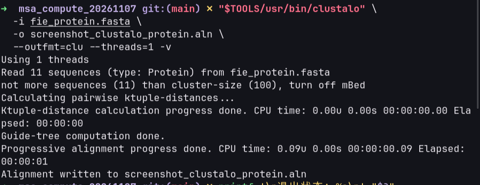
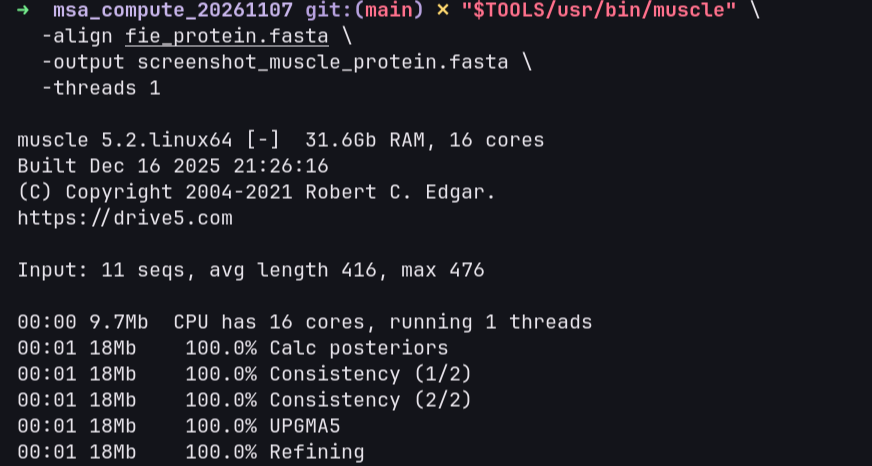
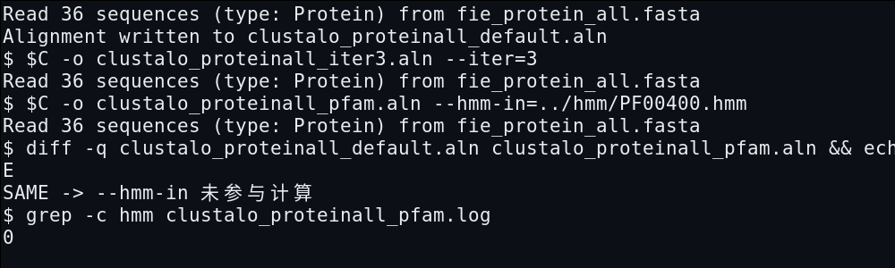
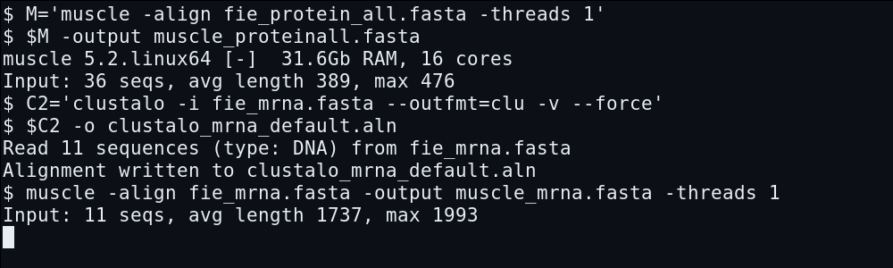
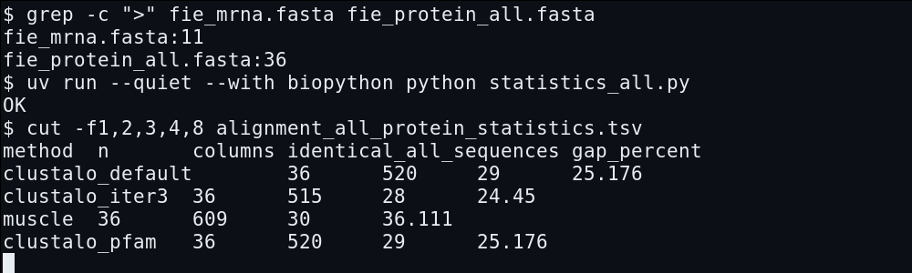
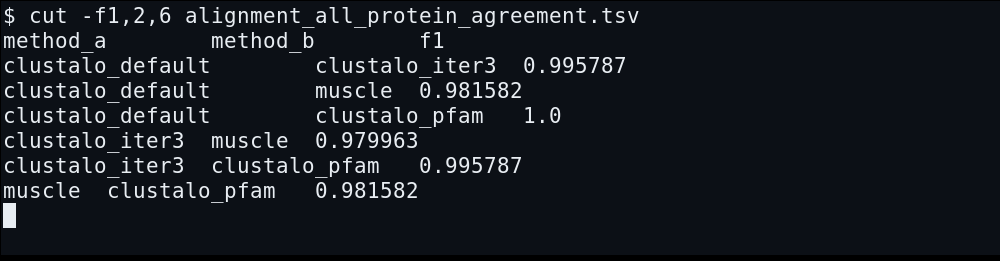
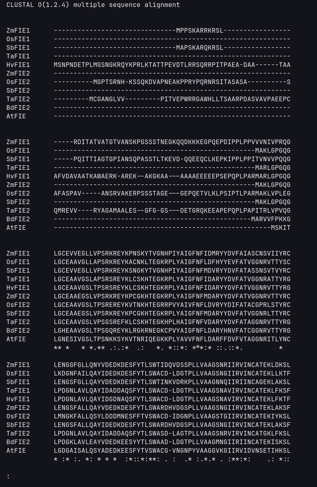
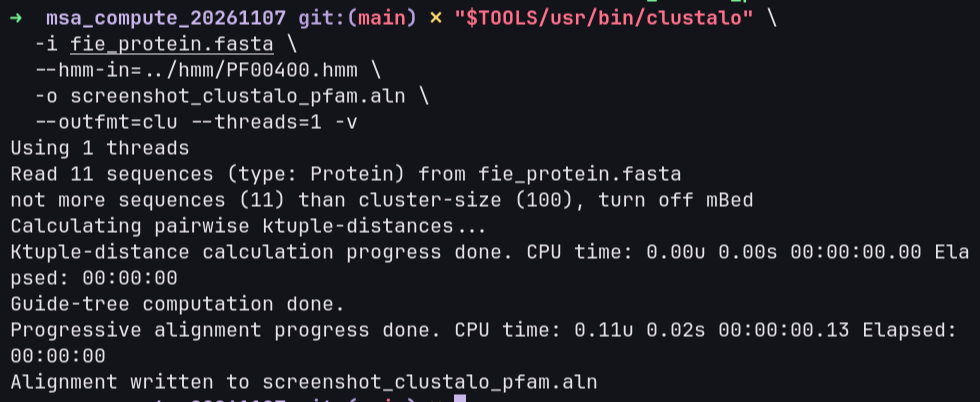

姓名：曹荣麟 班级：生技 2402 学号：2024014209
实验掌握情况：基本掌握
你的疑问（最多 3 条）：见讨论区
研究对象为玉米 ZmFIE1：mRNA NM_001111711.1 长 1,787 nt，蛋白 NP_001105181.1 长 461 aa，是植物 PRC2 中的 WD40 蛋白。实验二和三收集的跨物种 FIE 家族序列，其直系、并系关系仍属候选，须经基因树等证据验证。
使用 Clustal Omega 和 MUSCLE 进行多序列比对，比较默认、迭代与模型辅助结果，理解保守区、空位和结果可靠性的判断。
实验材料。 按任务书把前几次实验保存的同源序列汇总为两个纯文本文件（FASTA 格式）：fie_mrna.fasta 收录实验二全部 11 条 mRNA（ZmFIE1 自身及 10 条跨物种或 FIE2 候选；实验三未另存 mRNA），均为 mRNA 而非基因组序列；fie_protein_all.fasta 汇总实验二 11 条与实验三直系、并系候选及 DELTA 分层抽样，按登录号去重共 36 条。其中 25 条无配对 mRNA，两类文件不要求一一对应。fie_core_proteins.fasta 为重复记录，EGF 家族属另一研究分子，均去重或排除。序列改用不超过 10 字符的唯一短名，对应关系见 msa_compute_20261107/name_mapping.tsv；直系、并系关系仍属候选。
实验方法与结果。 核查记录数、字符及登录号；11 条 mRNA 正链均能精确翻译为相应完整蛋白并接终止密码子，支持这 11 对配对，不证明跨物种同源类型。配对与坐标见 msa_compute_20261107/pairing_translation.tsv；mRNA 含 UTR，与编码区比较不等价。
实验三 31 条唯一登录号中仅 6 条与实验二重叠，去重后并集 36 条；新增多为其它物种或不同 isoform，最低一致性 32.7%。并入后蛋白比对由 11 条的 515 列、145 个完全一致列、19.259% 空位变为 36 条的 520 列、29 列、25.176% 空位，两类集合统计口径不宜混用。11 对子集结果保留在 alignment_statistics.tsv。
实验材料与方法。 Linux 环境使用 Clustal Omega 1.2.4 和 MUSCLE 5.2，对 11 条 mRNA 与 36 条蛋白分别比对；Clustal Omega 另运行 --iter=3。输出经检查均保留全部输入条数，移除空位后与输入序列一致。
clustalo -i fie_protein.fasta -o clustalo_protein_default.aln --outfmt=clu --threads=1 -v
clustalo -i fie_protein.fasta -o clustalo_protein_iter3.aln --outfmt=clu --threads=1 -v --iter=3
muscle -align fie_protein.fasta -output muscle_protein.fasta -threads 1核酸改用 fie_mrna.fasta；36 条全量蛋白只改输入为 fie_protein_all.fasta、输出为 clustalo_proteinall_*.aln 与 muscle_proteinall.fasta。完整命令见 msa_compute_20261107/run_commands.sh（Clustal Omega 重复运行需 --force），输出存同名 .log。图 1、图 2、图 7、图 8 为 11 对成对子集的终端运行片段；图 3 至图 6 为本次补充的比对与统计核查终端记录，均在隔离 Linux 终端实际执行命令后截屏，公共参数用 shell 变量复用、长进度行已折叠，输出与统计文件逐字节一致。




| 序列 | 方法 | 序列数 | 比对列 | 完全一致列 | 空位比例 |
|---|---|---|---|---|---|
| mRNA | Clustal 默认 | 11 | 2,443 | 473 | 28.895% |
| mRNA | Clustal 迭代 3 次 | 11 | 2,415 | 472 | 28.071% |
| mRNA | MUSCLE | 11 | 2,730 | 476 | 36.370% |
| 蛋白 | Clustal 默认 | 36 | 520 | 29 | 25.176% |
| 蛋白 | Clustal 迭代 3 次 | 36 | 515 | 28 | 24.450% |
| 蛋白 | MUSCLE | 36 | 609 | 30 | 36.111% |
| 蛋白 | Clustal + PF00400 | 36 | 520 | 29 | 25.176% |
空位比例为空位字符数除以矩阵单元数；完全一致列要求全部序列为同一非空位字符。36 条仅 29 列完全一致（11 对子集 145 列），该指标受序列数与远缘程度影响，离散一致列不等于连续保守区。含 UTR 的核酸与蛋白组成不同，不能据此比较进化速率。按双非空位对齐列计，630 对两两一致性中位数 77.3%（30.5%–100.0%，见 pairwise_identity_summary.tsv），多对 100% 提示近重复条目；统计核查见图 5、图 6。



保守区与空位分布。 36 条 Clustal 默认比对共 520 列：第 1–120 列 3,315 个空位字符（占该区 4,320 位置的 76.7%）、无完全一致列，覆盖 ZmFIE1 第 1–72 位残基；第 121–250 列空位 3.1%、10 个完全一致列；第 300–400 列空位 7.0%、14 个完全一致列。空位集中在两端，前端偏高部分来自缺氨基端片段（如 EgFIE1b 前 90 列均为空位、仅 338 aa）。列号从 1 开始，不等同残基编号；末端空位不直接等于真实插入或缺失。
结果比较。 片段 IWSMKEF（ZmFIE1 第 264–270 aa）在 36 条中 32 条完全相同，位于 Clustal 默认第 316–322 列、迭代第 311–317 列、MUSCLE 第 392–398 列；其余 4 条为 IWSIKEF、IWSFKDF、IWDFSPH 与全空位。列号差异来自上游对齐布局而非蛋白坐标变化；该片段在 36 条中已非完全一致列。前 1–120 列空位数 Clustal 3,315、MUSCLE 3,805，两者列范围不完全对应，但均提示前段稀疏。
以所有序列对的对齐残基对集合比较，默认 Clustal 与 MUSCLE 的对称 F1：mRNA 0.7951、蛋白 0.9816；默认与迭代为 0.8819 和 0.9958。F1 是方法间一致性，不是准确率，也不证明功能或正确性。
双序列参数的作用。 渐进式比对先由两两距离建引导树再逐步合并，早期双序列比较影响后续排列；Clustal Omega 与 ClustalX 的实现与参数并不相同。
实验材料与方法。 InterPro 查得 Pfam PF00400 对应 WD40 重复（2026-11-10；条目）。从本地 Pfam 文件提取 PF00400.39（HMMER3/f，39 个模型位置），用 Clustal Omega --hmm-in 辅助比对。InterPro 模型页返回资源错误，官网下载未完成；本地模型原始来源及完整数据库版本未确认。完整命令见 msa_compute_20261107/run_commands.sh。
clustalo -i fie_protein.fasta --hmm-in=../hmm/PF00400.hmm -o clustalo_protein_pfam.aln --outfmt=clu --threads=1 -v36 条全集使用同一模型，输入改为 fie_protein_all.fasta、输出为 clustalo_proteinall_pfam.aln。

实验结果。 两组输出去空位后与输入一致；36 条全集 520 列、29 个完全一致列、空位 25.176%，按短名与默认逐列相同（F1=1.0），本次参数下未见排列变化，不能外推到其它数据。39 位点单一 WD40 重复模型不等同全长蛋白模型，也不单独证明结构或同源关系。
Clustal Omega 与 MUSCLE 均完成本组比对，部分对齐位置不同；列数、完全一致列和空位比例只描述结果形态，不衡量真实进化历史或算法准确率。
判断可靠性须核对功能位点是否同列对齐、α 螺旋与 β 折叠是否对应、空位是否落在结构单元之间而非内部，并比较多方法一致区；算法一致只是稳定性线索。未验证 FIE 功能位点或实验结构，不能断定某一比对最可靠。模型辅助与默认相同的原因未验证；核酸含不同长度 UTR，后续可做蛋白引导的密码子比对，不能替代本次 mRNA 比对。